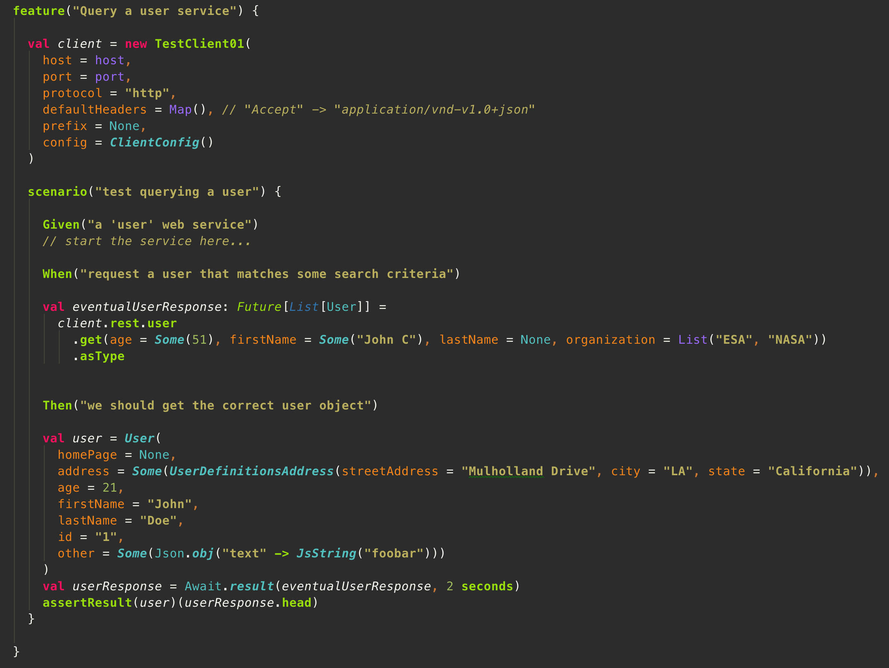

Closed-loop API integration testing with scraml
API-first service design makes more and more sense these days now that businesses tend to evolve towards microservice environments. It makes sense mainly because the focus with microservices is a lot on creating smart endpoints that should provide a long-term stable interaction with possibly hundreds of other services in its surroundings. The API should be extremely well thought-off to express the underlying domain problem that it solves, but the API should also exclusively evolve in a backward compatible manner. API stability is therefore of utmost importance.
Long-term API stability should be established with a test-driven API design process that forces a tight coupling between a formal API documentation, the API integration tests and the API implementation. The coupling should be that strong that changing anything in the API documentation that is not backward compatible with the existing API implementation should break the API integration tests to warn the development team. Such a coupling can be realized when API integration tests are written using scraml. Scraml provides a typesafe domain specific language (DSL) that reflects the formal API documentation that is expressed in the restful API modeling language, or RAML. Any change in the RAML definition will be reflected in the Java and Scala code generated by scraml, and by extension in the API test code that is written using scraml. Incompatible changes will simply result in compilation failures that break the code and alert the team.

Scraml is in fact a client code generator that produces a Scala and Java DSL from a RAML model that provides a unique, straightforward and typesafe programming model to interact with your REST services. It enables development teams to easily write an entire API integration tests suite before having written a single line of service code. As a DSL, the generated code exposes a fluent language that lets you construct your REST resources with their actions, query and form parameters and their payloads. In Java, the payloads are represented by POJOs, whereas in Scala case classes give you access to the request and response bodies. The client interaction is fully asynchronous and the default implementation is supported by ning as the http communication layer. The code sample below illustrates how natural it is to write a test scenario in Scala using the DSL generated with scraml with scalatest and FeatureSpec.

In the above code sample, the typesafe Scala code 'client.rest.user.get(...)', the query parameter types and the response body type are generated by scraml and reflects the specification of the RAML model for the REST service that is tested. By forcing the developer into following the specs represented by the RAML model, the written integration tests can only execute RESTful requests that are allowed by those specs. If the web services can't be addressed using this generated API, then the services are not conforming the API design expressed by the RAML model. In Java, the generated Java code would be similar and equally typesafe.
Using this process, API integration tests are locked in a closed-loop with the API documenation. As soon as incompatible changes would occur in the API documentation, the DSL will pick up the changes during the project’s codegeneration cycle and the compilation of the API tests will fail mercilessly. This alarms the team and calls for immediate action. When a REST mismatch sneaks in due to a bug in the API implementation, the API tests will fail as well, given that every endpoint is tested thoroughly. The resulting tight coupling between the API documentation, API integration tests and API implementation makes us confident that we offer a reliable API to our customers that matches its RAML documentation.